О чем эта книга ?
В данной книге я попытался рассказать о фундаментальных основах SC на языке Swift, принципах и разнице между Unstrured Concurrency, ручной и автоматической отмене задач, приоритете задачи и отладки.
Зачем нам нужен новый подход ?
Structured concurrency (далее SC) позволяет рассуждать о конкуретном вычислении используя специальные точки, позволяет узнать о разветвлениях, конкурентных вычислениях и увидеть результат вычислений, подобно тому, как работает блок условия if else в синхронном коде.
Конкурентная задача начинается, когда вы используете async let, создаете открепленную (detached) задачу или группу задач.
Задача возобновляются в точке приостановке (suspention point), обозначаемой await.
Однако не все задачи являются структурированными.
important
Структурированные задачи создаются с помощью async let и групп задач, а не структурированные — используя Task и Task.detached.
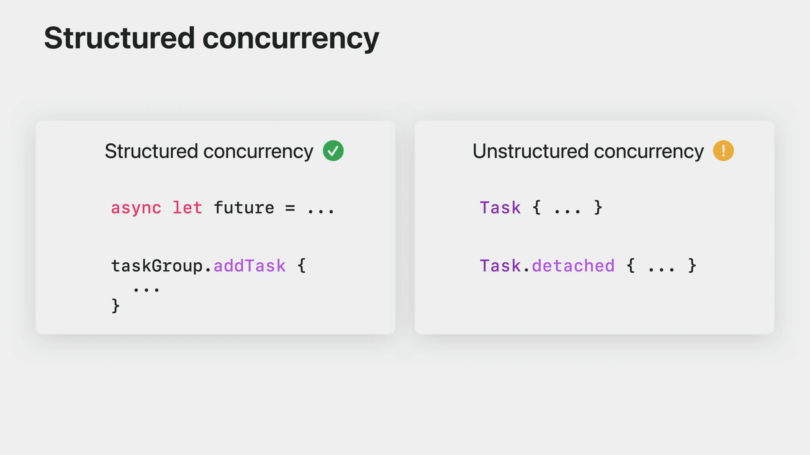
Структурированные задачи живут до конца области видимости, подобно локальным переменным и автоматически отменяются при выходе из области видимости. Такой подход даёт явно понять как долго задача должна жить.
note
Старайтесь, по возможности, использовать SC, вместо не структурированных задач (Unstructured).
О преимуществах SC вы можете прочитать ниже, а пока посмотрим на конкретный пример.
Представьте, что в нашем распоряжении кухня с несколькими шеф поварами, каждый из которых хочет приготовить суп. Приготовление супа состоит из нескольких шагов: нарезка ингридиентов, мариновка курицы, варка бульона и финальное приготовление. Некоторые задачи можно выполнить параллельно, а другие только в определенном порядке.
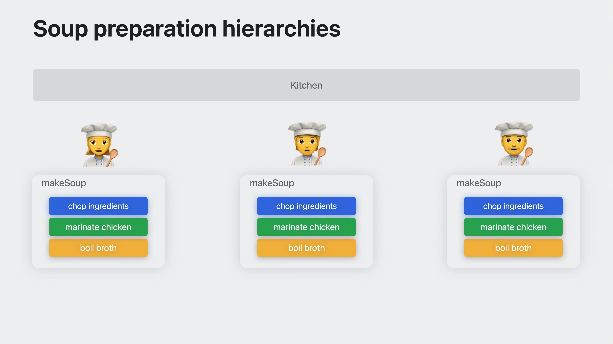
Посмотрим на нашу функцию приготовления makeSoup.
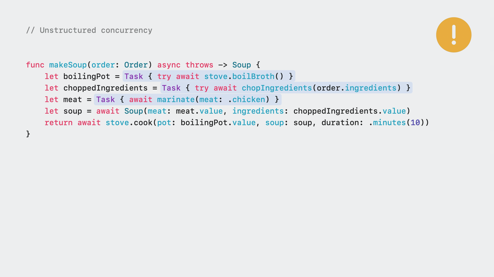
Возможно вы захотите явно добавить неструктурированные задачи Task { … } к вашим функциям и будете ожидать возвращения значения.
Это подразумевает, что задача будет выполняться конкуретно, но все же это не рекумондуемый способ использовать конкурентность в Swift.
Посмотрите на эту же функцию, но с использованием SC.
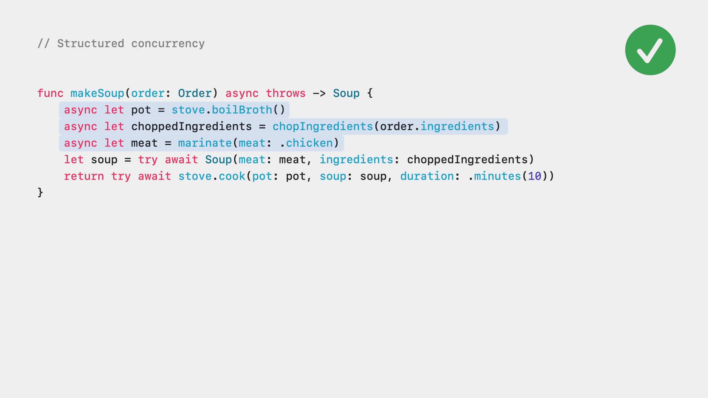
Поскольку мы знаем количество дочерних задач, мы можем использовать удобный синтаксис async let.
В этом случае, задачи формируют структурированные отношения с родительской задачей. Чуть позже вы узнаете почему это важно.
makeSoup вызывает несколько асинхронных функций, одна из которых нарезка ингридиентов chopIngridients(…), которая принимает список ингридиентов и использует taskGroup { … } для конкрурентной нарезки.
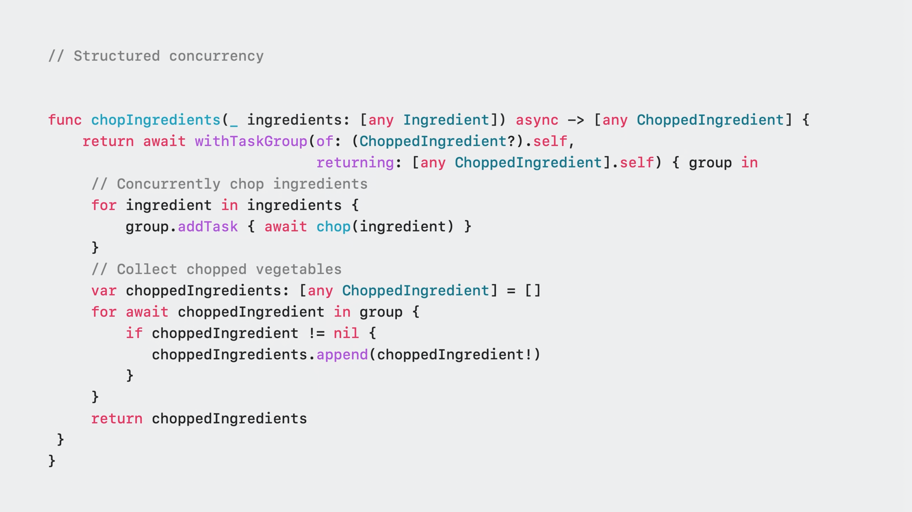
Вы ознакомились с задачей по приготовлению супа. Самое время посмотреть как выглядит дерево иерархии (Task tree) этой задачи.
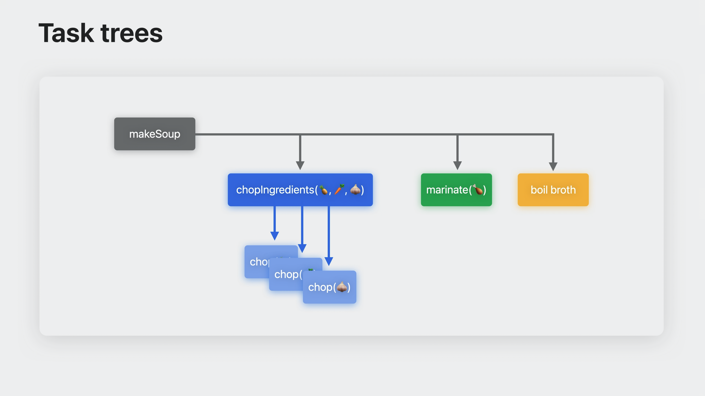
Дочерние задачи нашей функции выделены цветными квадратами. Стрелки указывают на отношения между родительскими и дочерними задачами.
Функция makeSoup содержит 3 дочерние задачи:
- Нарезка ингридиентов
chopIngridients(🍍, 🥕, 🧅) - Мариновка курицы
marinate(🍗) - Варка бульона
boil broth
Функция chopIngridients(…) использует taskGroup { … } для создания дочерних задач для каждого ингридиента. Мы используем 3 ингридиента, поэтому будут созданы 3 дочерних задачи. Такие родитеские и дочерние отношения формируют дерево задач (task tree).
Про отмену задач сказано в следующей главе.
Unstructured Concurrency
Если SC - это явно упорядоченные отношения между родильской и дочерними задачами, то Unstructured Concurrency — полная противоположность.
UC предлагает больше гибкости в управлении задачей, но ответственность за правильное выполнение этой задачи ложится на вас.
note
Основное отличие Unstructured от Structured — отсуствие родительской задачи!
Task cancellation (отмена задачи)
Отмена задачи необходима для индикации о том, что приложению больше не нужен результат задачи.
В случае отмены, задача должна остановиться, вернув частичный результат или выдать ошибку.
Выполнение задачи можно представить как последовательность периодов, в течение которых она выполнялась. Каждый такой период заканчивается в точке приостановки await или завершает задачу. Такие периоды выполнения представлены экземплярами PartialAsyncTask:
typealias PartialAsyncTask = UnownedJob
https://github.com/apple/swift/blob/8f5980666de3b5c8a7fc6c1ec2891f7f8f91d03b/stdlib/public/Concurrency/PartialAsyncTask.swift#L16
Для взаимодействия с частичным результатом необходимо реализовать кастомный исполнитель (executor).
В примере с супом, мы может остановить приготовление, если клиент ушел, решил заказать пюрешку с котлеткой или пришло время закрыть кухню. Что может привести к отмене задачи ? В случае SC (структурированных задач), задачи отменяются неявно при выходе из области видимости, хотя мы можем вручную вызвать метод cancelAll() для группы задач TaskGroup, чтобы отменить текущие и будущие дочерние задачи.
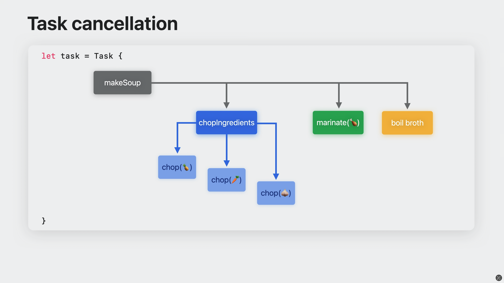
В случае с неструктурированными задачи, отмена происходит явно с помощью метода cancel().
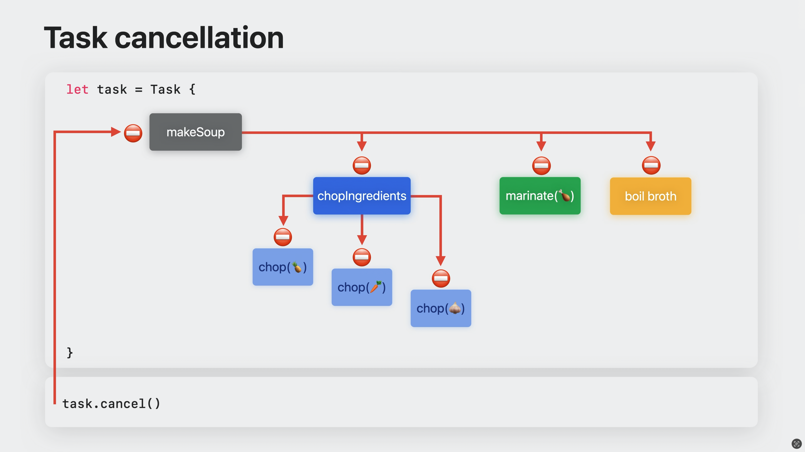
В результате, отмена родительской задачи приводит к отмене всех дочерних задач.
note
Отмена задач является кооперативной, поэтому дочерние задачи не останавливаются немедленно/мгновенно.
У каждой задачи существует состояние отмены: отменена или не отменена, под капотом это Bool тип данных. За это состояние отвечает свойство isCancelled. Обратите внимание, что не существует способа «отменить отмену».
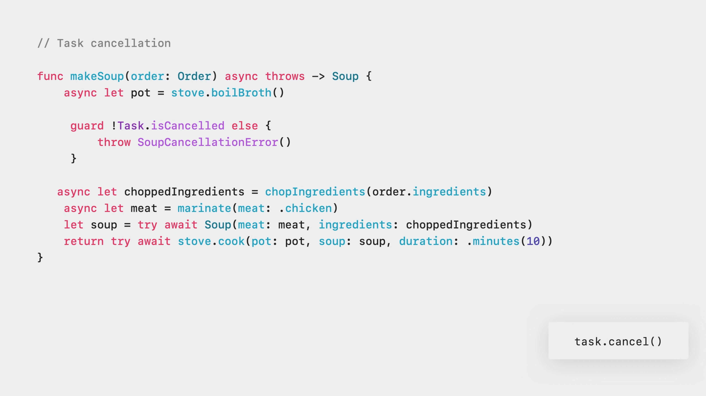
Отмена задачи является гонкой.
Если задача была отменена до нашей проверки в блоке guard, то метод вёрнет ошибку SoupCancellationError.
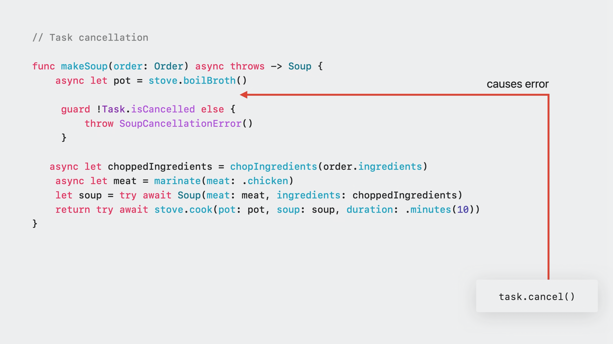
Если задача была отменена после блока guard, выполнение функции продолжиться и начнется подготовление к приготовлению супа.
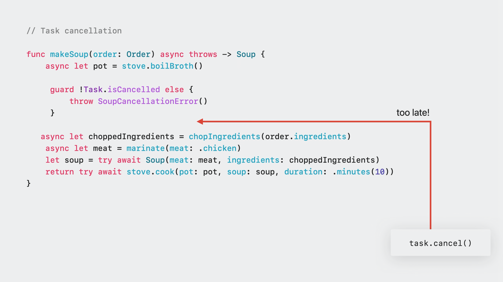
Для того, чтобы вернуть ошибку отмены вместо возвращения частичного результата, мы можем вызвать метод Task.checkCancellation(), который вернёт CancellationError если задача была отменена:
@_unavailableInEmbedded
public static func checkCancellation() throws {
if Task<Never, Never>.isCancelled {
throw _Concurrency.CancellationError()
}
}
@available(SwiftStdlib 5.1, *)
public struct CancellationError: Error {
// никаких дополнительный свойст, отмена должна быть легковесной
public init() {}
}
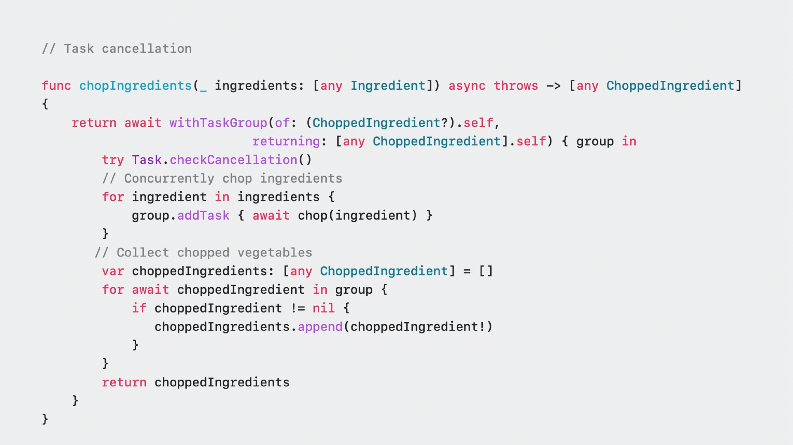
important
Очень важно проверить отмену задачи перед выполнением затратной работы.
Проверка на отмену является синхронным методом, поэтому любая функция, асинхронная или синхронная, реагирующая на отмену, должна проверить статус перед продолжением работы.
Отмена задачи с помощью isCancelled или checkCancellation полезна, когда задача запущена, но бывают случаи, когда вам нужно отреагировать на отмену, но задача в данный момент приостановлена и никакой код не выполняется, например при реализации AsyncSequence. В таком случае будет полезным использовать withTaskCancellationHandler.
@_unsafeInheritExecutor // the operation runs on the same executor as we start out with
@available(SwiftStdlib 5.1, *)
@backDeployed(before: SwiftStdlib 5.8)
public func withTaskCancellationHandler<T>(
operation: () async throws -> T,
onCancel handler: @Sendable () -> Void
) async rethrows -> T {
// unconditionally add the cancellation record to the task.
// if the task was already cancelled, it will be executed right away.
let record = _taskAddCancellationHandler(handler: handler)
defer { _taskRemoveCancellationHandler(record: record) }
return try await operation()
}
Для большего понимания, ниже на схеме изображены 2 сценария, при котором использовать тот или иной способ отмены.
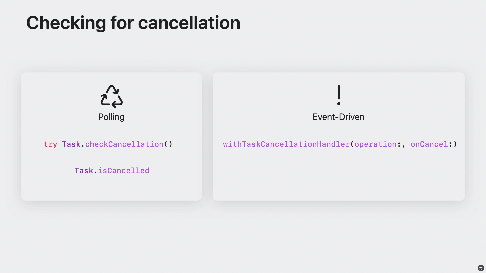
Практика
Данный раздел посвящен практическому использованию SC. По мере продвижения, главы будут усложняться.
-
В главе 4.1 мы рассмотрим написание собственного актора (хоть в книге мы не затрагиваем эту концепцию), загрузку изображения и декодирование объекта с помощью
async letзадач и группы задачwithTaskGroup. -
В главе 4.2 материал о технологии
AsyncSequence, который объясняет её концепцию, основные сценарии использования и дает практические примеры. -
Structured Concurrency with Tasks Различные фишки и приколы, разница между циклами и т.д.
-
Обработка подключения к сети —
AsyncStream. Практический пример. -
Различные примеры с тестов компилятора. Async/Await in WebSockets
-
Unit Testing Async/Await Logic Create a sample app and write unit tests for its async/await logic. Use the new XCTest methods to run tests asynchronously and prevent deadlocks by awaiting expectations. This project will help you practice testing async/await code and learn best practices for unit testing concurrency.
Практика: async let и withTaskGroup
В этой главе мы наглядно разберемся с реальными примерами и поймем, когда использовать async let, а когда withTaskGroup.
Пример приложения написан на современном стеке: SwiftUI и макросе @Observable для управления данными. Легенда: существует профиль кота и список имен других котов.
Необходимо получить:
- Аватарку кота.
- Список имен других котов.
actor CatDownloader
Для загрузки данных я подготовил актор CatDownloader, который будет скачивать аватарку и список котов.
struct Cat: Decodable, Identifiable {
let id: Int
let name: String
let breed: String
let photoUrl: String
}
actor CatDownloader {
var decoder: JSONDecoder {
let decoder = JSONDecoder()
decoder.keyDecodingStrategy = .convertFromSnakeCase
return decoder
}
// URL для аватарки
let avatarURL: URL = .init(string: "https://image.lexica.art/full_webp/4f696c7b-f280-43ce-80f0-dd211c7f553")!
let catAPI: URL = .init(string: "https://raw.githubusercontent.com/Proekt-SwiftUI/sc-book/refs/heads/main/practice_data/cat_api.json?token=GHSAT0AAAAAACY4C77IXVFZ522PDU33FK6AZYPWQEQ")!
// Скачиваем аватарку кота. В случае неудачи возвращаем nil
func downloadCatAvatar() async throws -> UIImage? {
let imageData: Data = try await URLSession.shared.data(for: .init(url: avatarURL)).0
guard let catImage: UIImage = UIImage(data: imageData) else {
print("Картинка кота не найдена и/или не доступна")
return nil
}
return catImage
}
// Скачиваем список котов, декодируем в массив [Cat] и возвращаем результат
func getListOfCats() async throws -> [Cat] {
let catsData: Data = try await URLSession.shared.data(for: .init(url: catAPI)).0
let cats: [Cat] = try decoder.decode([Cat].self, from: catsData)
return cats
}
}
class CatViewModel
Для взаимодействия между актором и вьюхой, создадим CatViewModel с применением макроса @Observable:
@Observable
final class CatViewModel {
let downloader = CatDownloader()
var catImage: Image?
var listOfCats: [Cat] = []
func downloadCatImage() async {
do {
guard let finalImage: UIImage = try await downloader.downloadCatAvatar() else {
return
}
await MainActor.run {
catImage = Image(uiImage: finalImage)
}
print("Аватар кота загрузился")
} catch {
print(error.localizedDescription)
}
}
func getListOfCats() async {
do {
let decodedCats: [Cat] = try await downloader.getListOfCats()
await MainActor.run {
listOfCats = decodedCats
}
print("Список котов загрузился")
} catch {
print(error.localizedDescription)
}
}
}
MagicWithCat + SwiftUI
Теперь создадим графический интерфейс:
struct MagicWithCat: View {
@State
private var catData = CatViewModel()
var body: some View {
VStack {
CatImageView(image: catData.catImage)
.ignoresSafeArea(.all, edges: .top)
Spacer()
List(catData.listOfCats) { cat in
Text(cat.name)
}
}
.animation(.smooth, value: catData.catImage)
.task {
await catData.downloadCatImage()
await catData.getListOfCats()
}
}
}
struct CatImageView: View {
let image: Image?
var body: some View {
if let image {
image
.resizable()
.aspectRatio(contentMode: .fill)
.frame(height: 350)
.clipShape(.rect(cornerRadius: 16))
} else {
RoundedRectangle(cornerRadius: 16)
.foregroundStyle(.secondary)
.frame(height: 350)
.overlay {
HStack {
Text("Loading cat image")
.font(.title2.bold())
.foregroundStyle(.white)
ProgressView()
.tint(.white)
.padding(7)
.background(.secondary.opacity(0.25), in: .circle)
}
}
}
}
}
Основное внимание стоит уделить модификатору .task {…}, где происходит загрузка данных. Сначала загружается аватар кота, затем список имен. В консоли вы увидите:
Аватар кота загрузился
Список котов загрузился
Это происходит последовательно, так как сначала выполняется первая задача downloadCatImage(), а затем вторая getListOfCats(). Мы можем поменять их местами, чтобы сначала загружался список:
.task {
await catData.getListOfCats()
await catData.downloadCatImage()
}
Чтобы сделать вызовы параллельными, мы можем использовать async let. Тогда обе задачи будут выполняться одновременно:
.task {
async let avatar: Void = catData.downloadCatImage()
async let cats: Void = catData.getListOfCats()
await avatar
await cats
}
// Список котов загрузился
// Аватар кота загрузился
Рефакторинг
- Пример с
async let
Этот метод хорош для небольшого числа асинхронных задач, где порядок выполнения не имеет значения:
// Подходит для небольшого количества задач, порядок вызова await не важен
func getDataViaAsyncLet() async {
async let image: Void = downloadCatImage()
async let cats: Void = getListOfCats()
await cats
await image
}
Вызовем задачу:
.task {
await catData.getDataViaAsyncLet()
}
- Пример с withTaskGroup
Этот метод полезен, когда требуется большое количество асинхронных вызовов или работа с циклами:
// Подходит для большого количества задач или работы с циклами
func downloadViaTaskGroup() async {
await withTaskGroup(of: Void.self) { group in
group.addTask { await self.downloadCatImage() }
group.addTask { await self.getListOfCats() }
}
}
Вызовем задачу:
.task {
await catData.downloadViaTaskGroup()
}
Когда использовать async let и когда withTaskGroup
- async let — подходит для параллельного выполнения небольшого количества задач, когда порядок завершения не важен. Хорошо, если задачи не зависят друг от друга.
- withTaskGroup — используется для более сложных сценариев, когда нужно динамически создавать и управлять задачами, например, при большом количестве запросов или циклах с дочерними задачами.
Практика: AsyncSequence
В этой главе мы разберем технологию AsyncSequence в Swift, которая позволяет работать с последовательностями данных асинхронно. AsyncSequence полезен, когда нам нужно получать данные постепенно или по частям, например, при чтении из потока данных или получении событий. Мы рассмотрим реальные примеры использования и узнаем, как управлять асинхронными последовательностями.
Что такое AsyncSequence?
AsyncSequence — это протокол, который предоставляет интерфейс для асинхронного итератора. Вместо того чтобы возвращать все элементы сразу, как обычные последовательности Sequence, AsyncSequence возвращает элементы по одному, позволяя обрабатывать их асинхронно.
Это особенно полезно для работы с операциями, которые могут занять неопределенное время, например:
- Сетевые запросы с постепенным поступлением данных.
- Потоки данных, такие как события или сообщения.
- Чтение файлов или данных из внешних источников.
Основные концепции
AsyncIterator— объект, который итерирует через элементы асинхронной последовательности.for await— специальная конструкция для итерации по элементам AsyncSequence.
Network status
Давайте рассмотрим простой пример асинхронной последовательности, которая используется для отслеживания статуса сети в реальном времени. Этот подход позволяет нам удобно и эффективно обрабатывать изменения в статусе интернет-соединения.
extension NWPath.Status {
var isConnected: Bool {
self != .satisfied
}
}
struct NetworkStatus: AsyncSequence {
typealias Element = Bool
func makeAsyncIterator() -> AsyncStream<Element>.Iterator {
let monitor = NWPathMonitor()
let monitorQueue = DispatchQueue(label: String(describing: Self.self) + "Queue")
return AsyncStream { continuation in
monitor.pathUpdateHandler = { path in
continuation.yield(path.status.isConnected)
}
monitor.start(queue: monitorQueue)
continuation.onTermination = { @Sendable _ in
monitor.cancel()
}
}
.makeAsyncIterator()
}
}
-
NetworkStatusреализует протокол AsyncSequence. ПротоколAsyncSequenceтребует реализации типа алиасаElement(является типом данныхBool) и методmakeAsyncIterator(). Последний возвращает асинхронный итератор, который будет управлять последовательностью значений. -
В основе нашего подхода лежит
NWPathMonitorиз фреймворкаNetwork, который предназначен для отслеживания статуса сети. Этот монитор позволяет следить за изменениями подключения, включая переключения между Wi-Fi, сотовой связью и отсутствием сети.
monitor.pathUpdateHandler: данный обработчик вызывается каждый раз, когда происходит изменение состояния сети. Мы используем его, чтобы передать новое значение состояния черезcontinuation.yield.monitor.start(queue:): для запускаNWPathMonitorнеобходимо указать, в каком потоке (очереди) будет обрабатываться его работа. Здесь используется очередьDispatchQueue, специально созданная для мониторинга.
- Асинхронные последовательности (sequence), такие как
AsyncStream, обеспечивают удобный способ создания и управления последовательными данными, которые асинхронно поступают во времени. В нашем кодеAsyncStreamсоздаёт поток значений на основе изменений статуса сети. Этот поток затем возвращает итератор, который мы передаём дальше.
continuation.yield: передаёт данные (в данном случае — состояние сети) асинхронно в поток, когда изменяется статус сети.continuation.onTermination: обрабатывает завершение потока. Когда поток завершён, монитор сетиNWPathMonitorостанавливается с помощью методаcancel().
Использование
Используя асинхронный цикл for await, мы можем последовательно получать значения состояния сети. Этот цикл будет постоянно ждать изменения состояния и реагировать на него.
var isNetworkAvailable: Bool = false
for await networkAlive in NetworkStatus() {
isNetworkAvailable = networkAlive
}
Трюки и полезное
В этой главе будут рассмотрены различные трюки и куски кода, которые можно использовать в различных ситуациях.
Hop to MainActor
Функция hopToMainActor(_:) с помощью unsafeBitCast обходит проверку компилятора на выполнение замыкания с @MainActor на главном потоке, преобразуя его в обычное замыкание () -> ().
Это позволяет выполнить замыкание в любом потоке, нарушая акторную изоляцию и потенциально создавая проблемы с потокобезопасностью.
func hopToMainActor(_ x: @escaping @MainActor () -> ()) {
typealias Func = () -> ()
let x2 = unsafeBitCast(x, to: Func.self)
x2()
}
@MainActor
func another() async {
hopToMainActor { }
}
note
unsafeBitCast — это низкоуровневое преобразование типов, которое позволяет преобразовать один тип в другой без проверки их совместимости.
Сравнение приоритета задачи
Функция ниже служит для сравнения приоритета задачи:
func executedAt(priority: TaskPriority) async {
print("START 🔦:")
let currentPrioprity = Task.currentPriority
while (priority != currentPrioprity) {
print("Task priority = \(currentPrioprity) != fn \(priority)")
try? await Task.sleep(for: .seconds(1))
}
}
await executedAt(priority: .background)
Вывод
#![allow(unused)] fn main() { START 🔦: Task priority = TaskPriority.high != fn TaskPriority.background Task priority = TaskPriority.high != fn TaskPriority.background Task priority = TaskPriority.high != fn TaskPriority.background Task priority = TaskPriority.high != fn TaskPriority.background Task priority = TaskPriority.high != fn TaskPriority.background Task priority = TaskPriority.high != fn TaskPriority.background Task priority = TaskPriority.high != fn TaskPriority.background Task priority = TaskPriority.high != fn TaskPriority.background Task priority = TaskPriority.high != fn TaskPriority.background Task priority = TaskPriority.high != fn TaskPriority.background Task priority = TaskPriority.high != fn TaskPriority.background Task priority = TaskPriority.high != fn TaskPriority.background Task priority = TaskPriority.high != fn TaskPriority.background Task priority = TaskPriority.high != fn TaskPriority.background … }
Функция executedAt(priority:) проверяет текущий приоритет задачи через свойство Task.currentPriority и сравнивает его (приоритет) с переданным значением priority. Если они не совпадают, она выводит сообщение в консоль и засыпает на одну секунду, повторяя проверку до тех пор, пока приоритеты не станут равными. В данном примере функция ожидает, пока текущий приоритет задачи не станет равен .background.
Скачивание данных
В примере кода функция download10MB загружает данные по URL и выводит время выполнения задачи. В операторе defer мы выводим время завершения работы задачи.
func download10MB(id: Int) async throws -> Data {
let readmeURL = URL(string: "https://raw.githubusercontent.com/wmorgue/wmorgue/main/README.md")!
let startDate = Date()
print("Task #\(id) started downloading.")
defer {
let duration = Date().timeIntervalSince(startDate)
print("Task #\(id) completed in \(duration) seconds.")
}
return try await URLSession.shared.data(from: readmeURL).0
}
for r in 0...10 {
Task {
try await download10MB(id: r)
}
}
Вывод
Task #1 started downloading.
Task #2 started downloading.
Task #7 started downloading.
Task #0 started downloading.
Task #4 started downloading.
Task #6 started downloading.
Task #5 started downloading.
Task #3 started downloading.
Task #10 started downloading.
Task #9 started downloading.
Task #8 started downloading.
Task #5 completed in 1.651481032371521 seconds.
Task #2 completed in 1.6585689783096313 seconds.
Task #3 completed in 1.6518199443817139 seconds.
Task #6 completed in 1.651737928390503 seconds.
Task #4 completed in 1.651810884475708 seconds.
Task #7 completed in 1.65175199508667 seconds.
Task #0 completed in 1.6590250730514526 seconds.
Task #1 completed in 1.658919095993042 seconds.
Task #10 completed in 1.5991131067276 seconds.
Task #8 completed in 1.5986690521240234 seconds.
Task #9 completed in 1.5986000299453735 seconds.
Но более правильным и оптимальным вариантом будет использование withThrowingTaskGroup вместо цикла for по нескольким причинам:
- Управление задачами:
withThrowingTaskGroupпозволяет эффективно управлять группой асинхронных задач. В отличие от использованияTaskв цикле, где задачи работают независимо друг от друга,TaskGroupдает контроль над выполнением всех задач и их завершением, что упрощает управление асинхронностью. - Конкурентная обработка: Внутри
TaskGroupзадачи выполняются параллельно, и группа завершится только тогда, когда завершатся все задачи. Это предотвращает случайные ошибки, когда одна задача может завершиться раньше, чем другие, или если они не будут правильно синхронизированы. - Обработка ошибок:
withThrowingTaskGroupвстроенно обрабатывает ошибки. Если одна из задач выбросит исключение, выполнение всей группы завершится и управление будет передано обработчику ошибок. В цикле for без этой группы необходимо вручную следить за каждой задачей и обрабатывать ошибки индивидуально. - Управление ресурсами:
TaskGroupиспользует встроенные механизмы для оптимизации использования ресурсов, предотвращая перегрузку системы созданием слишком большого количества параллельных задач, что делает его более эффективным. - Чистота и простота кода: С использованием
TaskGroupкод становится чище и проще для понимания, так как явным образом создается группа, в которой управляются все задачи, что повышает читаемость и сопровождаемость.
await withThrowingTaskGroup(of: Data.self) { group in
for r in 0...10 {
try await group.addTask { try await download10MB(id: r) }
}
}
Вывод
Task #3 started downloading.
Task #2 started downloading.
Task #1 started downloading.
Task #6 started downloading.
Task #5 started downloading.
Task #0 started downloading.
Task #4 started downloading.
Task #7 started downloading.
Task #10 started downloading.
Task #8 started downloading.
Task #9 started downloading.
Task #0 completed in 1.0400439500808716 seconds.
Task #6 completed in 1.0401649475097656 seconds.
Task #1 completed in 1.0402040481567383 seconds.
Task #8 completed in 1.0201719999313354 seconds.
Task #10 completed in 1.0204299688339233 seconds.
Task #9 completed in 1.0203959941864014 seconds.
Task #7 completed in 1.040037989616394 seconds.
Task #2 completed in 1.0401289463043213 seconds.
Task #3 completed in 1.0400739908218384 seconds.
Task #4 completed in 1.0400439500808716 seconds.
Task #5 completed in 1.0400769710540771 seconds.
Работа с приоритетами
В этом коде демонстрируется создание и выполнение асинхронных задач с разными приоритетами.
Сначала определяется массив taskPriorities, содержащий приоритеты задач: .userInitiated, .background и .low.
Функция makeEachTask принимает приоритет задачи и асинхронную функцию, выводя сообщение о начале задачи с указанным приоритетом и выполняя переданную асинхронную функцию.
Внутри блока withTaskGroup для каждого приоритета из массива создаются задачи, которые выполняются конкурентно.
let taskPriorities: [TaskPriority] = [.userInitiated, .background, .low]
func makeEachTask(with priority: TaskPriority, fn: () async -> Void) async {
print("Start task with \(priority) priority")
await fn()
}
await withTaskGroup(of: Void.self) { group in
for priority in taskPriorities {
await makeEachTask(with: priority) {
print("Finish task with \(priority.description) done")
}
}
}
Каждая задача выводит сообщение о своем завершении.
Вывод
Start task with TaskPriority.high priority
Finish task with TaskPriority.high done
Start task with TaskPriority.background priority
Finish task with TaskPriority.background done
Start task with TaskPriority.low priority
Finish task with TaskPriority.low done
Проверка отмены у группы
func test_detach_cancel_taskGroup() async {
print(#function) // CHECK: test_detach_cancel_taskGroup
await withTaskGroup(of: Void.self) { group in
group.cancelAll() // immediately cancel the group
print("group.cancel()") // CHECK: group.cancel()
group.addTask {
// immediately cancelled child task...
await withTaskCancellationHandler {
print("child: operation, was cancelled: \(Task.isCancelled)")
} onCancel: {
print("child: onCancel, was cancelled: \(Task.isCancelled)")
}
}
// CHECK: child: onCancel, was cancelled: true
// CHECK: child: operation, was cancelled: true
}
print("done") // CHECK: done
}
await test_detach_cancel_taskGroup()
Worker
struct EmptyResult {}
actor Worker {
var workerTask: Task<Void, Never>?
var result: EmptyResult?
deinit {
assert(workerTask != nil)
print("Retain count = ", _getRetainCount(Worker.self))
print("Weak Retain count = ", _getWeakRetainCount(Worker.self))
print("deinit actor")
}
func execute() {
workerTask = Task {
print("начало работы задачи")
try? await Task.sleep(for: .seconds(1))
self.result = EmptyResult()
print("конец работы, выход из области видимости")
}
}
}
Управление задачей при помощи Task.yeild()
При использовании акторов иногда требуется явно приостановить выполнение задачи, чтобы обеспечить равномерное распределение ресурсов и дать другим задачам возможность выполняться.
Для этого используется метод Task.yield(), который позволяет текущей задаче приостановиться и уступить выполнение другим задачам, ожидающим своей очереди.
protocol Start: Actor {
func start(times: Int) async -> Int
}
extension Start {
func start(times: Int) async -> Int {
for i in 0...times {
print("actor \(Self.self): \(#function) \(i)")
await Task.yield()
}
return times
}
}
actor One: Start {}
actor Two: Start {}
func yielding() async {
let one = One()
let two = Two()
await withTaskGroup(of: Int.self) { group in
group.addTask {
await one.start(times: 100)
}
group.addTask {
await two.start(times: 100)
}
}
}
await yielding()
Мы создаем протокол Start, в котором определен метод start(times:), выполняющийся асинхронно в цикле.
В реализации метода (через расширение протокола) каждую итерацию вызывается метод Task.yield(), что позволяет актору приостанавливать задачу и продолжать выполнение других задач.
В главной функции await yielding() акторы One и Two запускаются параллельно в группе задач и каждая из них выполняет метод start(times:), приостанавливаясь в каждой итерации.
Такой подход полезен при выполнении ресурсоёмких операций, которые могут длиться долго.
Вставка Task.yield() делает работу задач более сбалансированной, предотвращая блокировку других акторов и улучшая отзывчивость приложения.
Вывод
actor One: start(times:) 0
actor Two: start(times:) 0
actor One: start(times:) 1
actor Two: start(times:) 1
actor Two: start(times:) 2
actor One: start(times:) 2
actor One: start(times:) 3
actor Two: start(times:) 3
actor One: start(times:) 4
actor One: start(times:) 5
actor One: start(times:) 6
actor One: start(times:) 7
actor One: start(times:) 8
actor Two: start(times:) 4
actor Two: start(times:) 5
actor One: start(times:) 9
actor Two: start(times:) 6
actor Two: start(times:) 7
actor One: start(times:) 10
actor Two: start(times:) 8
actor One: start(times:) 11
actor One: start(times:) 12
actor One: start(times:) 13
actor Two: start(times:) 9
actor Two: start(times:) 10
actor One: start(times:) 14
actor Two: start(times:) 11
actor Two: start(times:) 12
actor Two: start(times:) 13
actor Two: start(times:) 14
actor Two: start(times:) 15
actor Two: start(times:) 16
actor One: start(times:) 15
actor One: start(times:) 16
actor Two: start(times:) 17
actor One: start(times:) 17
actor One: start(times:) 18
actor Two: start(times:) 18
actor One: start(times:) 19
actor Two: start(times:) 19
actor One: start(times:) 20
actor Two: start(times:) 20
actor One: start(times:) 21
actor Two: start(times:) 21
actor Two: start(times:) 22
actor One: start(times:) 22
actor Two: start(times:) 23
actor Two: start(times:) 24
actor One: start(times:) 23
actor One: start(times:) 24
actor Two: start(times:) 25
actor One: start(times:) 25
actor One: start(times:) 26
actor Two: start(times:) 26
actor One: start(times:) 27
actor One: start(times:) 28
actor One: start(times:) 29
actor One: start(times:) 30
actor One: start(times:) 31
actor One: start(times:) 32
actor One: start(times:) 33
actor Two: start(times:) 27
actor One: start(times:) 34
actor Two: start(times:) 28
actor One: start(times:) 35
actor Two: start(times:) 29
actor One: start(times:) 36
actor Two: start(times:) 30
actor One: start(times:) 37
actor Two: start(times:) 31
actor Two: start(times:) 32
actor Two: start(times:) 33
actor Two: start(times:) 34
actor One: start(times:) 38
actor Two: start(times:) 35
actor Two: start(times:) 36
actor One: start(times:) 39
actor Two: start(times:) 37
actor One: start(times:) 40
actor One: start(times:) 41
actor One: start(times:) 42
actor One: start(times:) 43
actor Two: start(times:) 38
actor One: start(times:) 44
actor Two: start(times:) 39
actor One: start(times:) 45
actor Two: start(times:) 40
actor One: start(times:) 46
actor Two: start(times:) 41
actor One: start(times:) 47
actor Two: start(times:) 42
actor Two: start(times:) 43
actor One: start(times:) 48
actor One: start(times:) 49
actor Two: start(times:) 44
actor One: start(times:) 50
actor Two: start(times:) 45
actor One: start(times:) 51
actor One: start(times:) 52
actor One: start(times:) 53
actor One: start(times:) 54
actor One: start(times:) 55
actor One: start(times:) 56
actor Two: start(times:) 46
actor Two: start(times:) 47
actor Two: start(times:) 48
actor Two: start(times:) 49
actor One: start(times:) 57
actor Two: start(times:) 50
actor One: start(times:) 58
actor Two: start(times:) 51
actor One: start(times:) 59
actor Two: start(times:) 52
actor One: start(times:) 60
actor Two: start(times:) 53
actor One: start(times:) 61
actor Two: start(times:) 54
actor One: start(times:) 62
actor Two: start(times:) 55
actor Two: start(times:) 56
actor One: start(times:) 63
actor Two: start(times:) 57
actor One: start(times:) 64
actor One: start(times:) 65
actor Two: start(times:) 58
actor One: start(times:) 66
actor One: start(times:) 67
actor One: start(times:) 68
actor Two: start(times:) 59
actor One: start(times:) 69
actor One: start(times:) 70
actor Two: start(times:) 60
actor One: start(times:) 71
actor One: start(times:) 72
actor One: start(times:) 73
actor One: start(times:) 74
actor Two: start(times:) 61
actor One: start(times:) 75
actor Two: start(times:) 62
actor One: start(times:) 76
actor One: start(times:) 77
actor Two: start(times:) 63
actor One: start(times:) 78
actor Two: start(times:) 64
actor One: start(times:) 79
actor Two: start(times:) 65
actor One: start(times:) 80
actor Two: start(times:) 66
actor One: start(times:) 81
actor Two: start(times:) 67
actor One: start(times:) 82
actor One: start(times:) 83
actor Two: start(times:) 68
actor Two: start(times:) 69
actor One: start(times:) 84
actor Two: start(times:) 70
actor One: start(times:) 85
actor One: start(times:) 86
actor Two: start(times:) 71
actor One: start(times:) 87
actor One: start(times:) 88
actor Two: start(times:) 72
actor One: start(times:) 89
actor Two: start(times:) 73
actor One: start(times:) 90
actor One: start(times:) 91
actor Two: start(times:) 74
actor One: start(times:) 92
actor Two: start(times:) 75
actor One: start(times:) 93
actor Two: start(times:) 76
actor One: start(times:) 94
actor Two: start(times:) 77
actor One: start(times:) 95
actor Two: start(times:) 78
actor One: start(times:) 96
actor One: start(times:) 97
actor One: start(times:) 98
actor Two: start(times:) 79
actor Two: start(times:) 80
actor One: start(times:) 99
actor Two: start(times:) 81
actor Two: start(times:) 82
actor Two: start(times:) 83
actor One: start(times:) 100
actor Two: start(times:) 84
actor Two: start(times:) 85
actor Two: start(times:) 86
actor Two: start(times:) 87
actor Two: start(times:) 88
actor Two: start(times:) 89
actor Two: start(times:) 90
actor Two: start(times:) 91
actor Two: start(times:) 92
actor Two: start(times:) 93
actor Two: start(times:) 94
actor Two: start(times:) 95
actor Two: start(times:) 96
actor Two: start(times:) 97
actor Two: start(times:) 98
actor Two: start(times:) 99
actor Two: start(times:) 100
Isolated deinit
@globalActor
final actor Moonland {
static let shared = Moonland()
}
@Moonland
func hello() {}
class MyClass {
@Moonland deinit {
hello()
}
}
MyClass()
Погружаемся глубже
В этом разделе мы заглянем в исходный код компилятора stdlib/public/Concurrency, а именно рассмотрим как устроена задача под капотом, посмотрим на async let, а так же узнаем, как компилятор понимает какая именно из задач является структурированной, а какая не структурированной.
Заглядываем внутрь Task
Для начала, каждая задача имеет четыре состояния. За состояние (статус) отвечает класс TaskStatusRecord:
- Suspended: приостановлена и не выполняется
- Enqueued: ожидает выполнения
- Running: выполняется
- Completed: выполнена
За переключение состояний отвечают четыре метода. Возможны следующие переходы из одного состояния в другое:
// suspended -> enqueued
// suspended -> running
// enqueued -> running
// running -> suspended
// running -> completed
// running -> enqueued
Схематично:
---
title: Состояние задачи
---
flowchart LR
S((Suspended)) -- В ожидание --> E((Enqueued))
S((Suspended)) -- Выполнение без ожидания --> R((Running))
E -- Выполнение после ожидания --> R
Run((Running)) -- Задача приостанавливается --> Sus((Suspended))
Run -- В ожидание --> Enq((Enqueued))
Run -- Выполнение завершилось --> C((Completed))
Метаданные
Как понять, в каком состоянии задача приостановила свою работу ? А в каком должна возобновить ? Для ответа на эти вопросы, существуют методы с помощью которых можно передать контекст для приостановления и возобновления задачи.
AsyncContext: данный контекст управляет состоянием задачи, которая ожидает завершения в дальнейшем. Когда задача приостанавливается, текущее состояние и контекст сохраняются, чтобы ее (задачу) можно было возобновить позже.Continuation(TaskContinuationFunction): с помощьюcontinuationвозобновляется выполнение задачи.
// Функция для возобновления выполнения AsyncTask.
TaskContinuationFunction * __ptrauth_swift_task_resume_function ResumeTask;
- Класс
TaskOptionRecordотвечает за запись параметров созданной задачи, включая приоритет и другие детали, помогающие исполнителю эффективно и корректно управлять задачами. В обычном Swift хранится указатель метаданных и диспетчирезация происходит в witness table. Во встроенном (embedded) Swift у нас отсутствует witness table в рантайме, поэтому диспетчеризация вызывается напрямую (direct).
Планирование, приостановка и возобновление задачи
Исполнитель (executor) отвечает за планирование и запуск задач.
Приостановка задачи:
При использовании ключевого слова await, выполняемая задача приостанавливается.
Текущее состояние, включая приоритет, контекст и локальные переменные сохраняются.
В рантайме создается ContinuationAsyncContext для управления состоянием задачи, гарантируя возобновление задачи позже.
Хранение состояния для возобновления:
Continuation хранит данные таким образом, чтобы исполнитель или рантайм имели доступ к задаче во время приостановки. Обычно эти данные используются при добавлении задачи в очередь и последующего возобновления.
Возобновление задачи:
После завершения приостановки await, задача попадает в очередь соответствующего исполнителя, который планирует возобновление задачи.
Runtime восстанавливает состояние задачи, позволяя возобновить выполнение async функции с того места, где она (функция) была приостановлена.
У каждой возобновляемой задачи имеется ContinuationStatus:
https://github.com/apple/swift/blob/main/include/swift/ABI/Task.h
/// Status values for a continuation. Note that the "not yet"s in
/// the description below aren't quite right because the system
/// does not actually promise to update the status before scheduling
/// the task. This is because the continuation context is immediately
/// invalidated once the task starts running again, so the window in
/// which we can usefully protect against (say) double-resumption may
/// be very small.
enum class ContinuationStatus : size_t {
/// The continuation has not yet been awaited or resumed.
Pending = 0,
/// The continuation has already been awaited, but not yet resumed.
Awaited = 1,
/// The continuation has already been resumed, but not yet awaited.
Resumed = 2
};
На конкретном примере
Посмотрите на код ниже:
func fetchData() async throws -> Data {
let url = URL(string: "https://image.lexica.art/full_webp/298d5d92-5735-4474-ba0c-6d6b418df251")!
let data = try await URLSession.shared.data(from: url).0
return data
}
Task {
let data = try await fetchData()
print("Image size: \(data.count / 1024) kB")
}
В нашем случаем fetchData — это асинхронная функция, которая приостанавливается при ожидании сетевого запроса.
Ключевое слово await приостанавливает задачу, сохраняя её состояние (приоритет и т.д.) для дальнейшего продолжения (continuation).
Как только сетевой запрос успешно завершится, вернув данные, задача попадает в очередь своего исполнителя, для возобновления.
В случае успеха (если URL адрес существует), мы увидим вывод: Image size: 136 kB
Заглядываем внутрь async let
Каждая задача, созднанная с помощью async let является дочерней задачей.
Жизненный цикл async let
- Перед созданием задачи, компилятор выделяет большое фиксированное кол-во памяти. Вместе с этим устанавливаются внутренние флаги, записи о дочерних задачах и контекст.
- Инициализация задачи и её прикрепление к родительской задачи.
- Приостановка и возобновление. Сама по себе
async letне является точкой приостановки, но при обращение кasync letзадаче с помощью ключевого словаawait, текущая задача приостанавливает свое выполнение и сохраняет состояние. - Обработка ошибок. Задача может вернуть ошибку вместо результата.
- Отмена задачи при выходе из области видимости.
- Удаление записей о дочерних задачах.
- Освобождение памяти для дочерних задач и самой
async letзадачи.
При создании задачи с помощью async let компилятор определяет является ли она структурированной или не структурированной с помощью вспомогательных методов:
static inline bool taskIsStructured(JobFlags jobFlags) {
return jobFlags.task_isAsyncLetTask() || jobFlags.task_isGroupChildTask();
}
static inline bool taskIsUnstructured(TaskCreateFlags createFlags, JobFlags jobFlags) {
return !taskIsStructured(jobFlags) && !createFlags.isInlineTask();
}
static inline bool taskIsDetached(TaskCreateFlags createFlags, JobFlags jobFlags) {
return taskIsUnstructured(createFlags, jobFlags) && !createFlags.copyTaskLocals();
}
На примере
Посмотрим на самом маленьком примере:
func makeNames() async -> [String] {
["Siri", "ChatGPT", "Vertex"]
}
async let names: [String] = makeNames() // 1
await names // 2
// Пример с настоящими данными
async let data: Data = URLSession.shared.data(from: .init(string: "https://speedtest.selectel.ru/10MB")!).0
let result = try await data
print("Data size: \(result.count)")
// или более короткой синтаксис
// print("Data size: \(try await data)")
Под первым комментарием // 1 мы создаем задачу с помощью async let синтаксиса. Важно понять, что в этом случае задача не приостанавливается, поскольку ключевое слово await отсутствует.
Только во второй комментарии мы указываем ключевое слово await, с помощью которого задача приостанавливается и возвращает результат.
Чуть ниже я указал пример с настоящими данными (10MB), попробуйте запустить его.